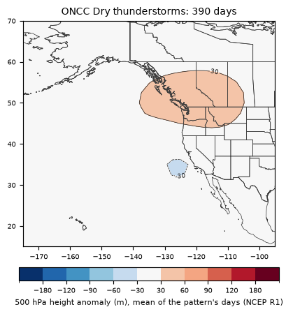
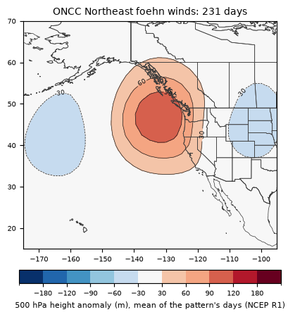
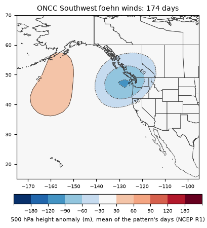
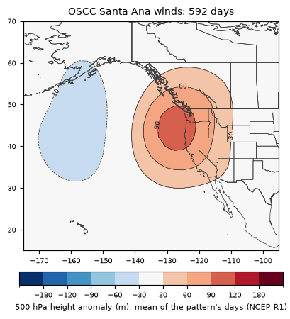
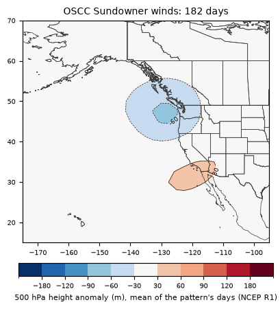
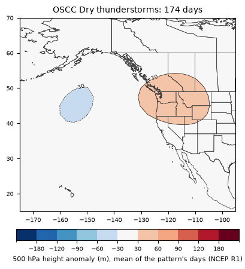

How the patterns described by fire-weather research line up with what this project found from 2001–2025 data.
Descriptions below are short paraphrases; see the sources for the full text and maps.
As documented (paraphrased): Under an upper ridge that brings monsoon moisture north (thunderstorms on its west side in south to southeast flow), or on the edge of an upper trough approaching the Pacific Northwest coast; moist mid levels over dry low levels. Case: 20-21 June 2008, over 5,000 strikes and 602 fires.
How we found its days: ≥ 500 lightning strikes in Northern California's PSAs. 390 days, 2001–2025 (about 15.6 a year).
Our 500 hPa regimes on those days: C ×1.7, D ×1.6, A ×0.9 (× how much more often than on the season's other days).
Average map on those days: This pattern has a ridge (heights +50 m above normal) centered near the Pacific Northwest and a trough (-34 m) centered near the California coast, with near-normal heights over California.
Fire: days of 1,000+ acres of growth in the pattern's area ran ×1.0 the usual odds for the date; new large fires ×2.2.

As documented (paraphrased): A strong, positively tilted upper trough moving inland over the Pacific Northwest or Great Basin, a ridge building in the eastern Pacific behind it, northeast cross-mountain flow and sinking air: downslope wind on the west slopes of the Sierra and Cascades, with a tight north-south surface gradient. Case: 49er Fire, September 1988 (before this record).
How we found its days: SFO–WMC fire-day minimum gradient ≤ -8.9 hPa. 231 days, 2001–2025 (about 9.2 a year).
Our 500 hPa regimes on those days: C ×2.3, A ×1.5, D ×0.9 (× how much more often than on the season's other days).
Average map on those days: This pattern has a ridge (heights +119 m above normal) centered near the Pacific Northwest and a trough (-52 m) centered near the northeast Pacific, with higher than normal heights over California (warm, dry, sinking air).
Fire: days of 1,000+ acres of growth in the pattern's area ran ×3.9 the usual odds for the date; new large fires ×5.3.

As documented (paraphrased): An upper trough just offshore or over the Pacific Northwest, strong southwest flow and the trough's dry slot over the Sierra and Cascades, a jet overhead: downslope wind on the east slopes, a strong west-east surface gradient. Case: Fountain Fire, August 1992 (before this record).
How we found its days: Reno 700 hPa wind from 200–260° at ≥ 25 kt with dewpoint depression ≥ 15 °C (dry slot), under 100 strikes. 174 days, 2001–2025 (about 7.0 a year).
Our 500 hPa regimes on those days: B ×2.3, E ×1.6, F ×1.4 (× how much more often than on the season's other days).
Average map on those days: This pattern has a ridge (heights +45 m above normal) centered near the northeast Pacific and a trough (-94 m) centered near the Pacific Northwest, with near-normal heights over California.
Fire: days of 1,000+ acres of growth in the pattern's area ran ×0.7 the usual odds for the date; new large fires ×0.7.

As documented (paraphrased): High pressure over a cooling Great Basin after the monsoon, a pressure gradient across Southern California and northeast cross-mountain flow, often after a front through the interior West; the jet's right-exit region gives sinking air. Case: Cedar Fire, late October 2003.
How we found its days: LAX–TPH fire-day minimum gradient ≤ -8.6 hPa. 592 days, 2001–2025 (about 23.7 a year).
Our 500 hPa regimes on those days: C ×1.7, D ×1.6, A ×1.3 (× how much more often than on the season's other days).
Average map on those days: This pattern has a ridge (heights +106 m above normal) centered near the Pacific Northwest and a trough (-57 m) centered near the northeast Pacific, with higher than normal heights over California (warm, dry, sinking air).
Fire: days of 1,000+ acres of growth in the pattern's area ran ×3.1 the usual odds for the date; new large fires ×4.1.

As documented (paraphrased): Downslope wind over the Santa Ynez Mountains from higher pressure at Santa Maria than Santa Barbara, set up by a southwest-northeast jet from northern California into the Intermountain West; May-July and again in fall and winter, often 12-24 h before a Santa Ana. Case: Jesusita Fire, 5 May 2009.
How we found its days: Santa Maria minus Santa Barbara pressure, evening (3–11 p.m.) max ≥ 4.7 hPa (97th percentile), May–Jul and Sep–Jan as CEFA describes. 182 days, 2001–2025 (about 7.3 a year).
Our 500 hPa regimes on those days: B ×1.6, E ×1.5, A ×0.9 (× how much more often than on the season's other days).
Average map on those days: This pattern has a ridge (heights +36 m above normal) centered near California and a trough (-65 m) centered near the Pacific Northwest, with near-normal heights over California.
Fire: days of 1,000+ acres of growth in the pattern's area ran ×1.1 the usual odds for the date; new large fires ×0.3.

As documented (paraphrased): The edge of a monsoon moisture surge, often with a cut-off upper low just off the Southern California coast; moisture aloft over dry low levels. Case: 21 September 2011.
How we found its days: ≥ 500 lightning strikes in the Santa Ana, Central Coast and San Diego footprints. 174 days, 2001–2025 (about 7.0 a year).
Our 500 hPa regimes on those days: D ×1.9, C ×1.2, A ×1.1 (× how much more often than on the season's other days).
Average map on those days: This pattern has a ridge (heights +49 m above normal) centered near the Pacific Northwest and a trough (-38 m) centered near the northeast Pacific, with near-normal heights over California.
Fire: days of 1,000+ acres of growth in the pattern's area ran ×0.4 the usual odds for the date; new large fires ×0.9.

As published (paraphrased): Northern and Central California's critical fire weather in 1951–60 fell into four types, the Subtropical High Aloft (the worst and longest), a meridional ridge with southwest flow ahead of a trough near 130° W, the Pacific High behind a dry cold front (post-frontal north wind) and the Great Basin High (Mono winds); Southern California's into the Subtropical High Aloft, southwest flow, post-frontal and Santa Ana types. Offshore LAX–Tonopah gradients of about 7 mb start northeast winds and 11–12 mb make them strong, the same levels the NWS later published.
Dated examples: 4 of the 7 example days (1953–1956, classified from the R1 reanalysis) fall in the regimes this crosswalk ties to their type: the Santa Ana and both post-frontal cases in A, the 1955 heat wave in D. The Great Basin High day lands in E, a trough off the coast, which is where Schroeder puts the other end of its gradient.
Seasonal fingerprints: each type's 1951–60 monthly day counts against each regime's 1951–60 monthly frequency (Spearman correlation over 12 months).
| Type | Best regime | ρ | All regimes |
|---|---|---|---|
| NC subtropical high aloft | B | +0.78 | A +0.43, B +0.78, C +0.19, D +0.05, E -0.69, F -0.51 |
| NC meridional ridge - southwest flow | B | +0.76 | A +0.34, B +0.76, C +0.30, D +0.11, E -0.68, F -0.52 |
| NC Pacific High post-frontal + Great Basin High | A | +0.51 | A +0.51, B +0.47, C +0.39, D +0.40, E -0.70, F -0.70 |
| SC subtropical high aloft | B | +0.61 | A +0.57, B +0.61, C +0.23, D +0.21, E -0.69, F -0.60 |
| SC Santa Ana | C | +0.69 | A -0.65, B -0.52, C +0.69, D +0.43, E +0.38, F -0.07 |
Only the cool-season Santa Ana has a seasonal shape distinctive enough to point to one regime (C). The summer types all peak in the same months, so they line up with whichever regimes are common in summer (A, B); this test can't separate them.
The fire-weather offices' published rules of thumb from "Critical Fire Weather Patterns of the United States", reproduced with this project's observations and scored as × usual odds (for the date) of a 1,000+ acre growth day in the pattern's area, 2001–2025.
| Office | Pattern | Rule | Days | × usual |
|---|---|---|---|---|
| Riverside | Santa Ana | LAX–TPH ≤ -6.4 hPa (our elevated cutoff) | 1,120 | ×1.9 |
| Riverside | Santa Ana | LAX–TPH ≤ -8.6 hPa (our high cutoff) | 592 | ×3.1 |
| Riverside | Santa Ana | LAX–TPH ≤ -10 hPa (Riverside: > 10 mb, potential) | 332 | ×4.8 |
| Riverside | Santa Ana | LAX–TPH ≤ -12 hPa (Riverside: > 12 mb, very strong) | 116 | ×7.8 |
| Riverside | Santa Ana | Vandenberg 850 hPa northerly (340–020°) ≥ 50 kt | 0 | – |
| Fresno | Sundowner | SMX–SBA evening max ≥ 4 mb | 612 | ×0.8 |
| Fresno | Sundowner | SMX–SBA ≥ 4 mb and Vandenberg 850 hPa 320–040° ≥ 15 kt | 178 | ×0.5 |
| Redding | North winds | Medford minus Sacramento, fire-day max ≥ 8.3 hPa (top 10%) | 463 | ×1.3 |
| Redding | North winds | Medford minus Sacramento, fire-day max ≥ 9.9 hPa (top 5%) | 232 | ×1.5 |
| Redding | North winds | Medford minus Sacramento, fire-day max ≥ 11.6 hPa (top 2%) | 92 | ×2.7 |
| Redding | North winds | for comparison: our RDD–MFR gradient, lowest 5% | 224 | ×1.3 |
As published (paraphrased): the unusually large fires stood out by antecedent dryness (evaporative demand drought index) more than by their daily weather; their growth pulled ahead of the smaller fires' only on the most extreme days (80th–100th percentile wind, Fosberg index and Hot-Dry-Windy).
In California's 2005–2025 fires of 10,000+ acres: fires that reached 90,000+ acres started with ERC at or above the 90th percentile 65% of the time, against 37% for 10,000–25,000-acre fires and 42% for 25,000–90,000 (median 93rd against the 85th–86th percentile), the same signal measured with fuels instead of evaporative demand, and the reason this project's outlook multiplies weather odds by the forecast fuels. Daily growth (scaled by each fire's own average) rises from about half the average on the calmest 40% of Hot-Dry-Windy days to 0.7–0.9 on the top 20% for every size of fire; the larger response of the biggest fires on those days doesn't show with this project's area-wide, reanalysis Hot-Dry-Windy measure.
As documented (paraphrased): dry season May–September, but critical growth any time live fuels are drought-stressed or cured; critical patterns center on strong trade-wind periods with high pressure to the north and/or a significant tropical cyclone passing south of the main islands; southwest frontal winds have also driven downslope fire on usually windward sides.
Against Hawaii's 241 large-fire days (≥ 300 acres from satellite growth or the fire records, 2001–2025):
| Pattern | How we found its days | Days | Large-fire days | × usual for the date |
|---|---|---|---|---|
| Strong trade winds (high pressure to the north) | Lihue or Hilo 850 hPa wind from 30–120° at ≥ 30 kt | 155 | 12 | ×3.2 |
| Tropical cyclone passing south of the islands | tropical storm or stronger, south of 19° N, within 1,200 km of the chain (IBTrACS) | 109 | 12 | ×2.2 |
| Both: strong trades with a tropical cyclone to the south | the August 2023 Maui setup | 9 | 4 | ×7.8 |
| Southwest frontal (Kona-type) wind | Lihue or Hilo 850 hPa wind from 180–270° at ≥ 20 kt | 386 | 3 | ×0.5 |
August 8, 2023 (Lahaina, Upcountry, Pulehu Road): strong trades yes, tropical cyclone to the south yes (Dora). The southwest-frontal pattern doesn't show up in this record. Tropical cyclone positions: NOAA IBTrACS v04.
As documented (paraphrased): three stages, warmer-drier-breezy and unstable, then stronger winds while still warm, dry and unstable, then the cold front; in the West most significant growth comes in the second stage.
In this record, at the daily resolution of the 500 hPa regimes (the last ridge day, C or D, before a trough regime, B or E, taken as the second stage): Northern California ×1.18 on that day, ×0.89 on the first trough day, and ×1.28 on ridge days that continue; Southern California ×0.99, ×1.07 and ×1.08. The ordering of stages 2 and 3 matches in the north, but a daily regime label is too coarse to separate the breakdown from the ridge itself; the offshore and thunderstorm rows carry that signal better.
Each date's 500 hPa regime. Dates since 2001 come from the calibration record; earlier ones are classified from the NCEP R1 reanalysis (1948–2000) against the same regime centroids. Before 1979 the reanalysis has no satellite data and is less reliable over the Pacific. Of the 12 pre-2001 cases (regimes classified, not fit, on those days), 7 land in the regimes the 2001–2025 crosswalk ties to their pattern.
| Date | Case | Pattern | Source | Regime | Expected | Regime from | |
|---|---|---|---|---|---|---|---|
| 1953-07-09 | Rattlesnake Fire | evening downslope (coastal high) | Krumm 1954, in the Synthesis | D | C/A | ✗ | R1 archive (classified) |
| 1956-11-25 | Inaja Fire | Santa Ana | Countryman et al. 1956, in the Synthesis | D | C/A/D | ✓ | R1 archive (classified) |
| 1988-09-11 | 49er Fire | northeast foehn | CEFA | A | C/A | ✓ | R1 archive (classified) |
| 1990-06-27 | Painted Cave Fire | Sundowner | CEFA; the Synthesis | B | E/B | ✓ | R1 archive (classified) |
| 1992-08-20 | Fountain Fire | southwest foehn | CEFA | C | E/B | ✗ | R1 archive (classified) |
| 1953-12-12 | Santa Ana with a Pacific High | Santa Ana | Schroeder et al. 1964 (fig. 83) | A | C/A/D | ✓ | R1 archive (classified) |
| 1954-10-14 | Great Basin High (Mono winds) | northeast foehn (Great Basin High) | Schroeder et al. 1964 (fig. 79) | E | C/A | ✗ | R1 archive (classified) |
| 1954-10-23 | Pacific High post-frontal north wind | post-frontal north wind | Schroeder et al. 1964 (fig. 78) | A | C/A/F | ✓ | R1 archive (classified) |
| 1955-06-29 | Post-frontal, Southern California | post-frontal north wind | Schroeder et al. 1964 (fig. 82) | A | C/A/F | ✓ | R1 archive (classified) |
| 1955-09-01 | Subtropical High Aloft heat wave | subtropical high aloft | Schroeder et al. 1964 (fig. 76) | D | D/C | ✓ | R1 archive (classified) |
| 1956-08-11 | Cold low aloft | cold low / trough aloft | Schroeder et al. 1964 (fig. 80) | F | E/B | ✗ | R1 archive (classified) |
| 1956-09-16 | Meridional ridge, southwest flow | southwest flow (trough near 130 W) | Schroeder et al. 1964 (fig. 77) | C | E/B | ✗ | R1 archive (classified) |
| 2003-10-25 | Cedar Fire | Santa Ana | CEFA | C | C/A/D | ✓ | 2001-present record |
| 2006-10-26 | Esperanza Fire | Santa Ana onset | the Synthesis | A | C/A/D | ✓ | 2001-present record |
| 2007-07-07 | Inyo Complex, Seven Oak | east-slope afternoon wind | the Synthesis | A | E/B/D | ✗ | 2001-present record |
| 2007-10-21 | October 2007 siege | Santa Ana | the Synthesis | A | C/A/D | ✓ | 2001-present record |
| 2007-10-22 | October 2007 siege | Santa Ana | the Synthesis (figs. 3-19, 3-20) | D | C/A/D | ✓ | 2001-present record |
| 2008-06-20 | June 2008 lightning siege | dry thunderstorms (trough offshore) | CEFA; Wallmann et al. 2010 | B | E/B | ✓ | 2001-present record |
| 2008-06-21 | June 2008 lightning siege | dry thunderstorms (trough offshore) | CEFA; Wallmann et al. 2010 | E | E/B | ✓ | 2001-present record |
| 2008-11-13 | Tea Fire | Sundowner | CEFA | A | E/B | ✗ | 2001-present record |
| 2009-05-05 | Jesusita Fire | Sundowner | CEFA | E | E/B | ✓ | 2001-present record |
| 2011-09-21 | Southern California dry lightning | dry thunderstorms (cut-off low) | CEFA | E | D/E | ✓ | 2001-present record |